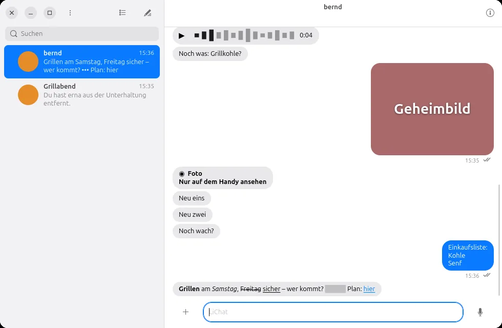
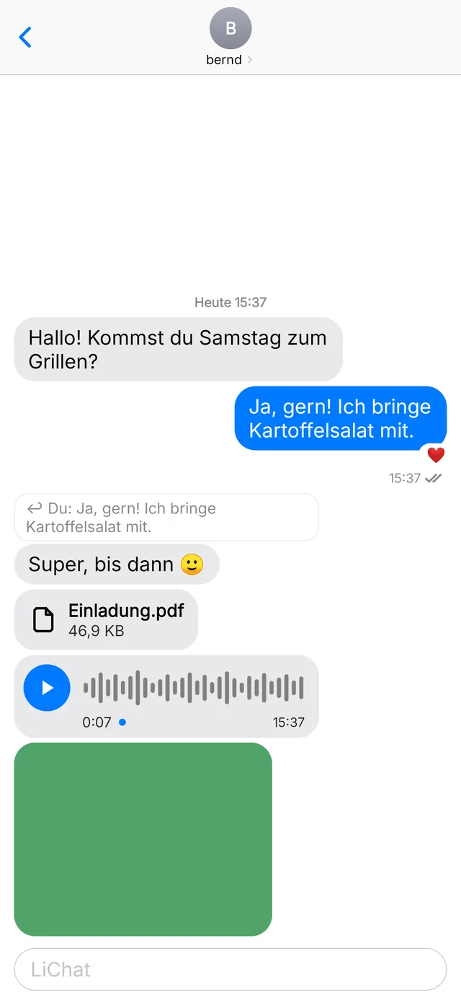
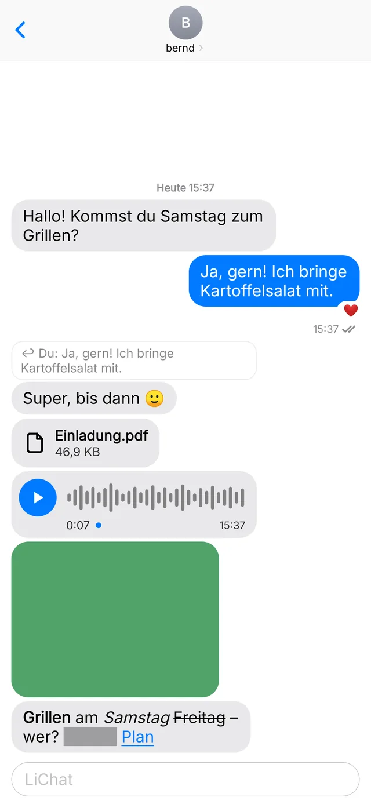
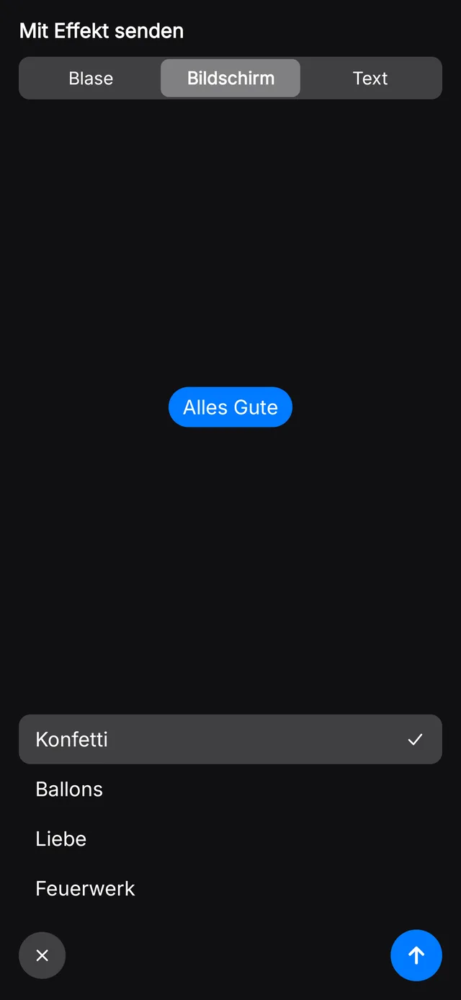
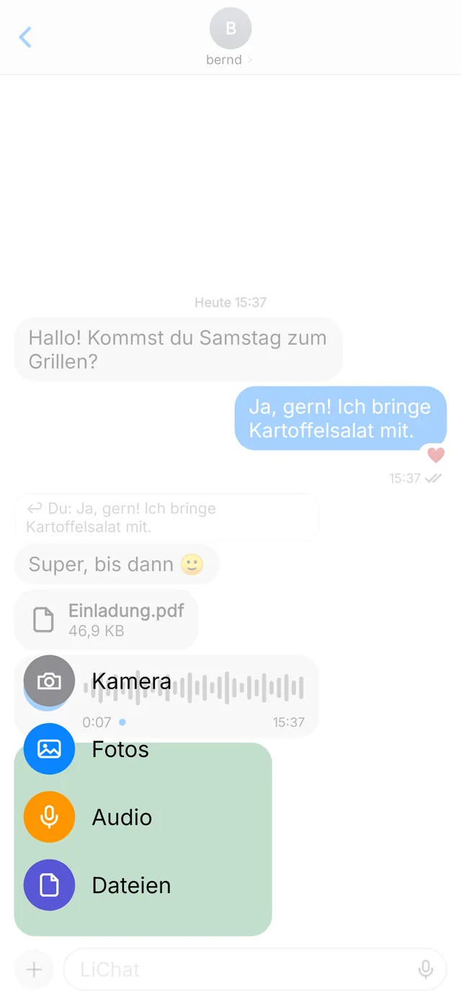
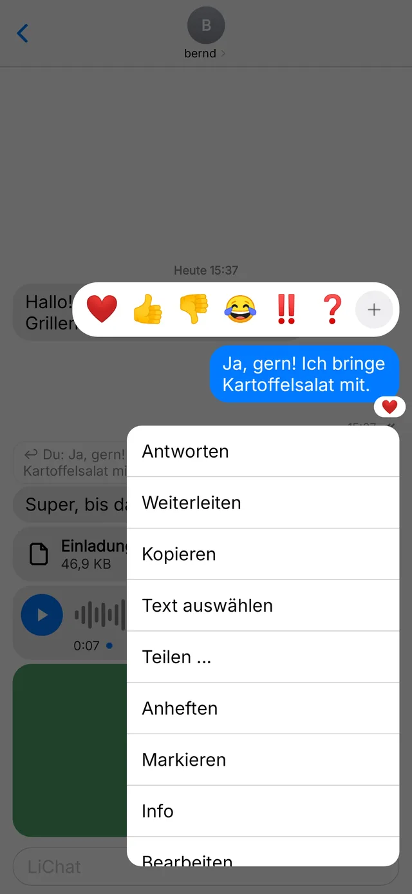

LiChat
LiChatDeine Gespräche.
Auf deinem Server.
Ein Messenger für Android und Ubuntu.
Ende-zu-Ende verschlüsselt, ohne Telefonnummer, ohne Werbung.


Schreiben wie gewohnt, nur privat
LiChat fühlt sich an wie die Nachrichten-App, die du kennst. Der Unterschied: Der Server gehört dir, und er kann nicht mitlesen.
Schreiben
Mehr als Text
Fett, kursiv, ein Spoiler oder Konfetti zum Geburtstag. Und wenn es mal leise sein soll, geht auch das.
- Formatieren: Mit Sternchen wird es fett, mit Unterstrich kursiv. Dazu durchgestrichen, Code, Zitate, Listen und Links mit Titel. Am Handy reicht es, Text zu markieren.
- Unsichtbare Tinte: Ein Spoiler bleibt verdeckt, bis man auf die Nachricht tippt. In Mitteilungen steht nur „•••“.
- Rechnen beim Schreiben: Steht am Ende
87,60/4 =, schlägt LiChat das Ergebnis vor.


Pfeil gedrückt halten
- Mit Effekt senden: Knall, Laut, Sanft, Konfetti, Ballons, Herzen, Feuerwerk oder bewegter Text, mit Vorschau vor dem Senden.
- Lautlos senden: spät abends, ohne jemanden zu wecken.
- Später senden: heute Abend, morgen früh oder zu einer eigenen Zeit.
Fotos und Sprache
Bilder, Alben, Sprachnachrichten
Fotos liegen erst über dem Eingabefeld, damit du Text dazuschreiben kannst. Mehrere werden ein Album. Hochladen läuft nebenher, du schreibst einfach weiter.
- Ohne Ortsangaben: Ort und Kameradaten verschwinden vor dem Senden aus Fotos und Videos.
- Einmal-Ansicht und verpixelt für Bilder, die nicht bleiben sollen.
- Sprachnachrichten mit Welle, vorher anhören, abspielen in 1×, 1,5× oder 2×.
- Markieren: auf dem Foto zeichnen, bevor es rausgeht.


Lange drücken, und alles ist da
- Reagieren mit einem Emoji, antworten oder privat aus einer Gruppe heraus antworten.
- Weiterleiten, teilen, kopieren oder nur einen Teil des Textes auswählen.
- Anheften für alle oder markieren nur für dich.
- Info: wann sie bei wem angekommen ist und wer sie gelesen hat.
- Bearbeiten in den ersten 15 Minuten, widerrufen in den ersten zwei.
Funktionen
Was LiChat noch kann
Gruppen
Mit Namen und Bild. Leute hinzufügen und entfernen, mit @Name jemanden direkt ansprechen.
Einladen per QR-Code
Wer LiChat neu hat, scannt den Code und gibt nur noch seinen Namen ein. Serveradresse tippt niemand ab.
Kontakt per QR oder PIN
Den Code des anderen scannen, und das Gespräch mit ihm ist offen. Kein exakter Benutzername nötig.
Mehrere Geräte
Handy und Rechner koppeln per QR-Code. Der bisherige Verlauf kommt einmal verschlüsselt mit.
Entwürfe
Angefangener Text, eine Antwort und gewählte Fotos bleiben beim Gespräch, auch nach einem Neustart.
Nicht gesendet?
Ist der Server kurz weg, geht die Nachricht von selbst raus, sobald er wieder da ist.
Häkchen und Tippen
Zugestellt, gelesen, schreibt gerade. Lesebestätigung und Tipp-Anzeige sind ab Werk aus und gelten nur gegenseitig.
App-Sperre
Am Handy mit Fingerabdruck oder Bildschirmsperre. Gesperrt zeigen Mitteilungen keinen Inhalt.
Fotos, Links, Dokumente
Alles, was in einem Gespräch geteilt wurde, auf einen Blick in den Infos.
Am Rechner zu Hause
Unter Ubuntu mit mehrzeiliger Eingabe, Enter zum Senden, Strg+B für fett, Sprachaufnahme mit dem Mikrofon und Wischen mit zwei Fingern für die Uhrzeiten.
Hell und dunkel
Folgt der Einstellung des Systems.
Datenschutz
Der Server liest nicht mit
Jede Nachricht wird auf deinem Gerät verschlüsselt, mit MLS (RFC 9420), und erst beim Empfänger wieder lesbar. Der Server reicht nur verschlüsselte Pakete weiter und löscht sie, sobald sie abgeholt sind. Gruppennamen, Kontaktlisten und Inhalte kennt er nicht.
Laden
Herunterladen
Kostenlos, Version 1.0.0 für Android und Ubuntu. Du brauchst eine Einladung für einen LiChat-Server, oder du betreibst selbst einen.
Android
APK laden und öffnen. Beim ersten Mal fragt Android, ob der Browser Apps installieren darf.
Fingerabdrücke
App-Signatur (SHA-256): ef147a9be330446497b2f038d8fe5af54628fb8deb315d667013a04dd008c586
Ubuntu
$ sudo apt install python3-gi gir1.2-gtk-4.0 \ gir1.2-adw-1 gir1.2-secret-1 python3-cryptography \ python3-pil gir1.2-gstreamer-1.0 ffmpeg \ gstreamer1.0-plugins-good gstreamer1.0-plugins-bad $ wget https://lisoftware.de/lichat/download/lichat-ubuntu-1.0.0.tar.gz $ tar xzf lichat-ubuntu-1.0.0.tar.gz -C ~/.local/share $ ~/.local/share/lichat/install.sh
Eigener Server
Mit Docker, nginx und einem kostenlosen Zertifikat in etwa einer halben Stunde. Danach lädst du die Leute ein, mit denen du schreiben willst.
Prüfsummen: SHA256SUMS · Quelltext auf github.com/veritasX1/LiChat · Hilfe